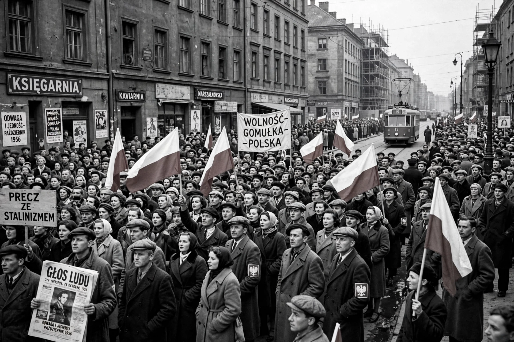

Polish October, also known as October 1956, the Polish thaw or Gomułka thaw, was a change in the politics of the Polish People's Republic in the second half of 1956, following Stalin's death and Khrushchev's Secret Speech.
| Polish October | |
|---|---|
 | |
| Date | October 1956 |
| Leader | Władysław Gomułka |
The Poznań protests of June 1956 were violently suppressed. In October, reformist Władysław Gomułka was restored as First Secretary of the Polish United Workers' Party despite Soviet troop movements and a tense visit by Khrushchev. A confrontation was avoided.
Poland gained greater autonomy: collectivisation was largely reversed, Cardinal Wyszyński was released, Soviet officers were withdrawn, and censorship eased — though reforms stalled in later years.